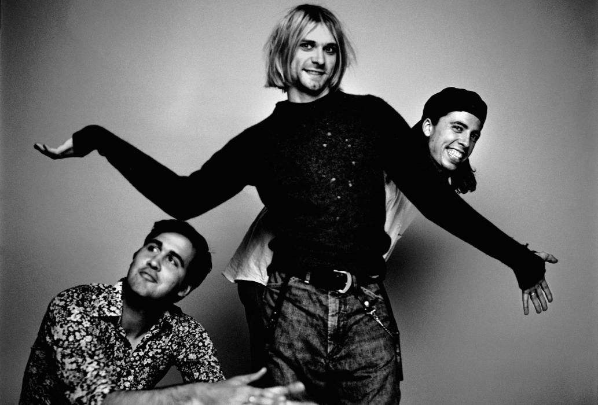

Nirvana
Nirvana fue una banda de grunge estadounidense procedente de Aberdeen, Washington, Estados Unidos integrada por el vocalista y guitarrista Kurt Cobain y el bajista Krist Novoselic en 1987. Desde su formación, Nirvana pasó a través de una serie de frecuentes cambios de baterista hasta que en 1990 se les unió definitivamente el baterista Dave Grohl. Nirvana actualmente es considerada como una de las bandas más famosas, mejor vendidas, importantes e influyentes de la historia de la música, siendo considerada la banda símbolo de una generación.13
